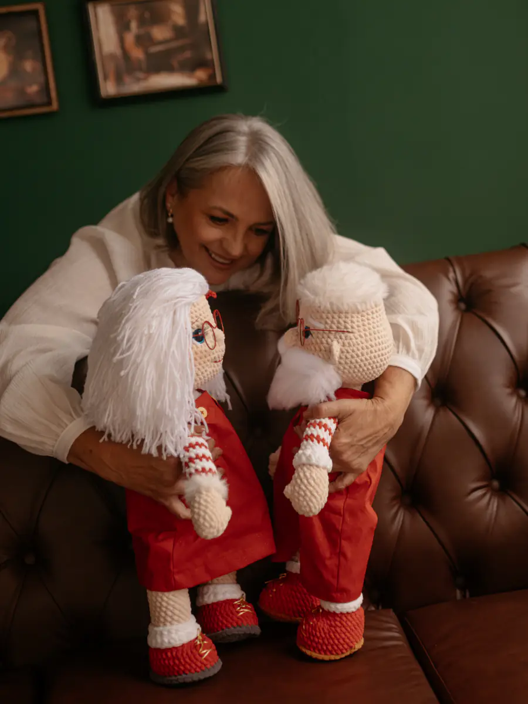
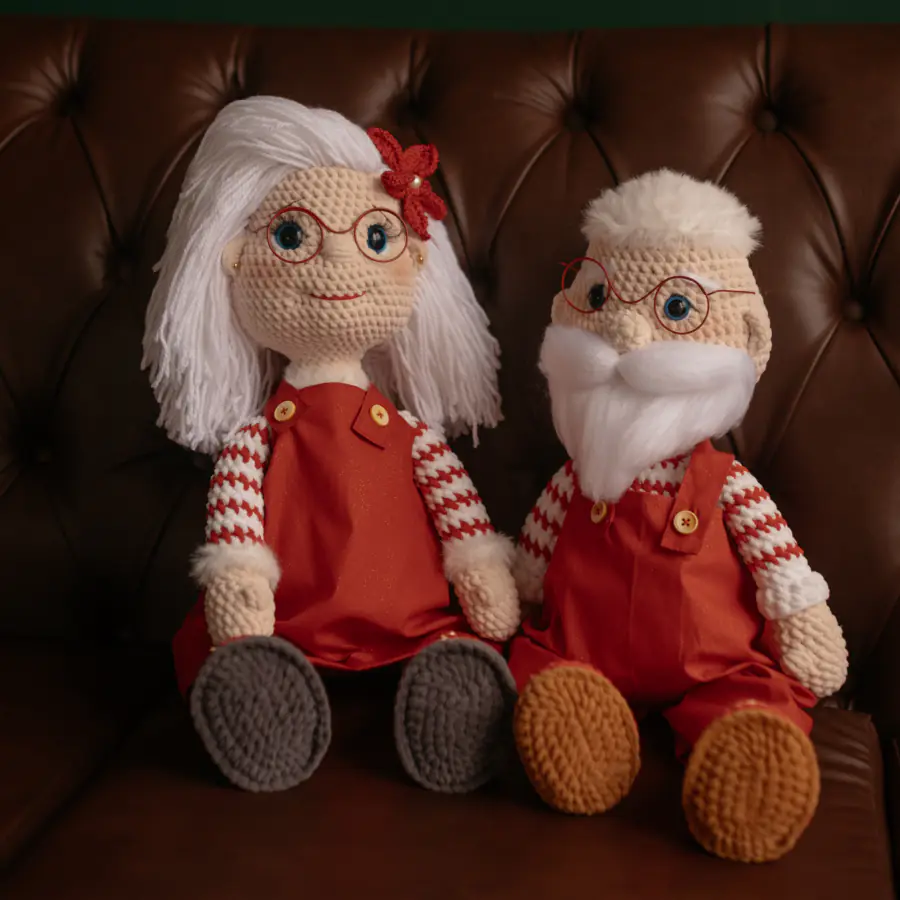
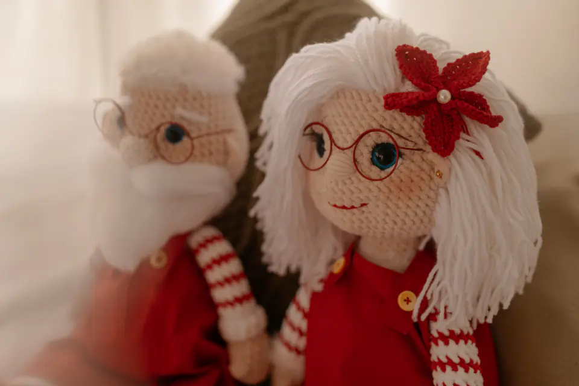
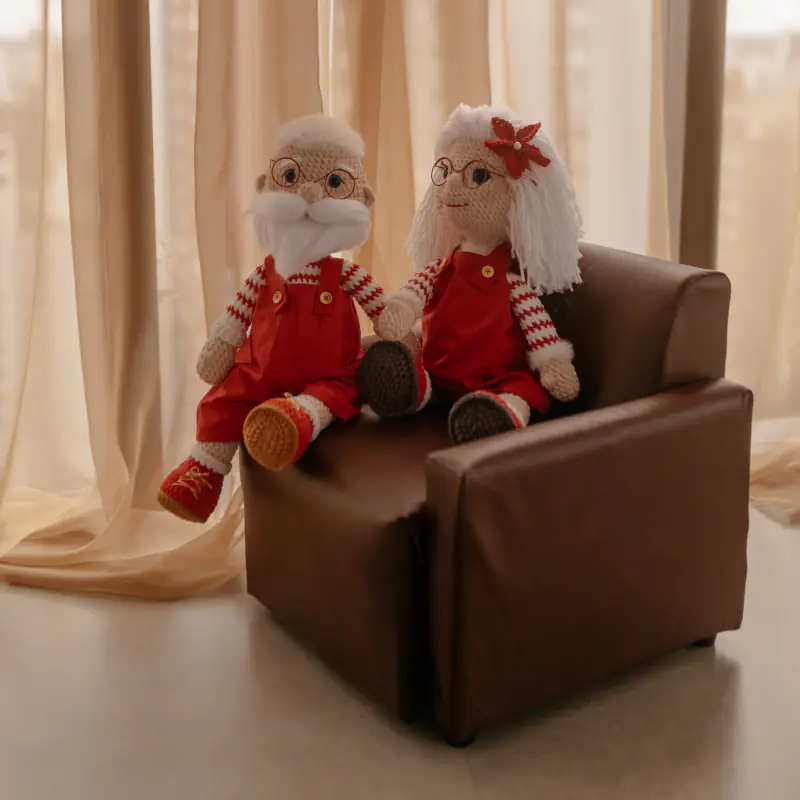
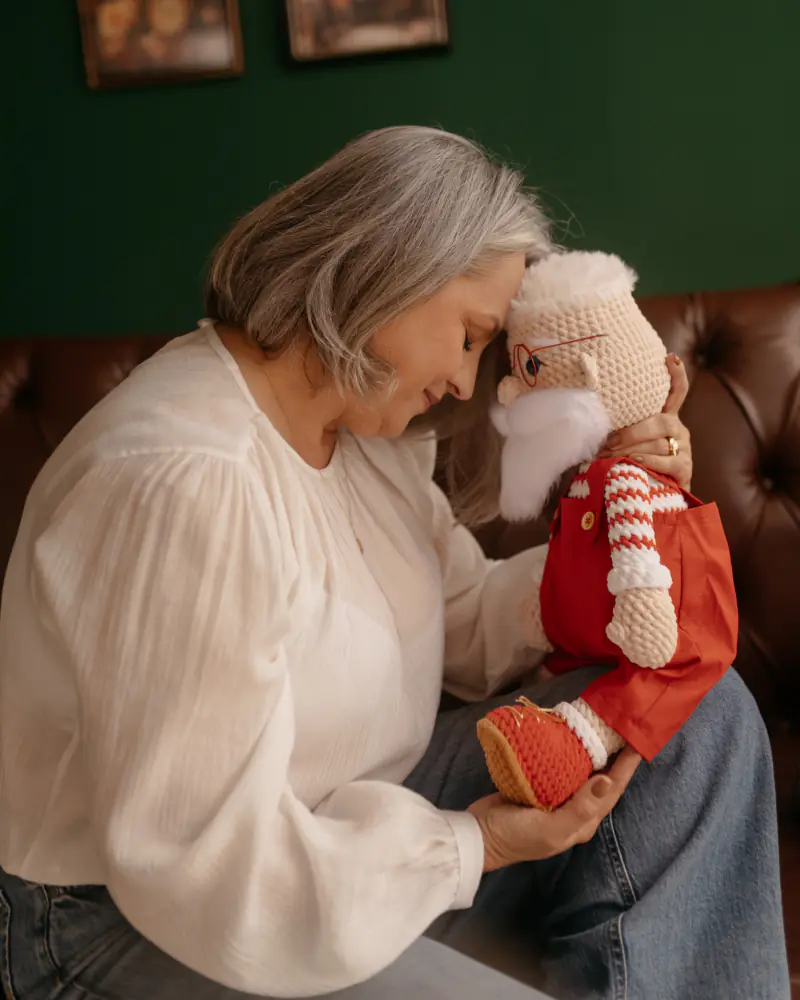

Receita de amigurumi em PDF · Natal
Noel e Néllis
O casal de Natal que eu faço em crochê, agora em receita pra você fazer aí na sua casa.

- 53 cmde altura
- 42páginas
- 48fotos de apoio
- 2vídeos de apoio
Uma receita só faz os dois bonecos, o Papai Noel e a Néllis. Carreira por carreira, com as fotos das etapas e vídeo pras partes que a mão aprende vendo.
Quero a receitaReceita em PDF · nível intermediário
Foto de verdade
Os bonecos da foto são os meus
Esses são o Noel e a Néllis que eu fiz, fotografados de verdade, sem montagem. A receita é o passo a passo até eles.


O que vem na receita
Tudo pra fazer os dois, do começo ao fim
- Os dois bonecos numa receita só. Pernas, sapatos, braços, corpo e pescoço são iguais nos dois. O rosto, o cabelo e a roupa de cada um têm a sua própria seção.
- 42 páginas e 48 fotos de apoio. As fotos mostram as etapas, pra você comparar o seu trabalho com o meu antes de seguir.
- 2 vídeos de apoio. Um pra cada boneco, mostrando a expressão do rosto, a barba, os cílios e o cabelo, que são as partes que a mão aprende vendo. O QR code fica na própria receita.
- Lista de materiais pronta. Os fios da Círculo com a cor e a quantidade de cada um, mais agulha, olhos e o resto. É só levar pro armarinho.
- A roupa dos dois. Jardineira e gorro do Noel e saia da Néllis, em crochê. E, se preferir tecido, os moldes do vestido e da bermuda, com todas as medidas.
- Ajuda no direct. Travou em alguma parte? Me manda uma foto de onde parou no @arte.lis72.
O que eu aprendi fazendo
Os cuidados que fazem o boneco ficar bonito por muito tempo
01
A cabeça que não tomba
Em boneco grande, a fibra acomoda com o tempo e a cabeça cai pra frente. Por isso o pescoço leva um saquinho de tricoline cheio de fibra, que segura a cabeça por dentro, como uma coluna. A receita ensina a fazer e a ajustar ao seu ponto.
02
A sola com base rígida
Uma base de plástico rígido ou papelão firme, colada por dentro da sola, segura o formato do pé. A própria sola de crochê vira o molde: é só contornar e recortar.
03
O porquê de cada passo
Encha o sapato antes de subir a perna, porque depois a boca fica estreita demais.
A receita inteira é assim: o que fazer e por que fazer.
Renda extra no Natal
Pode fazer pra vender

Os bonecos que você fizer com esta receita, pode vender. Quantos quiser, na feira, no WhatsApp ou na internet. Só peço que você escreva "Receita: ArtElis" nos anúncios e nas fotos.
Preço de referência por boneco pronto
R$397
É uma referência, não uma promessa: quanto cobrar é decisão sua e depende de onde e pra quem você vende.
Pra quem quer uma renda extra no Natal, vale começar cedo: boneco de Natal tem data pra ficar pronto.
O que não pode: repassar, revender, imprimir pra outras pessoas, traduzir ou publicar a receita. Você compra o direito de fazer os bonecos, não de revender o PDF.
Quero a receitaAntes de comprar
Receita de nível intermediário
Ela foi feita pra quem já tem afinidade com o crochê. Confira o que ela ensina e o que fica de fora:
O que a receita ensina
- a fazer os dois bonecos, carreira por carreira, até a montagem
- o rosto, a barba e o cabelo de cada um, com vídeo
- a roupa de crochê e os moldes da roupa de tecido
- o pescoço firme e a sola com base rígida
O que ela não ensina
- os pontos básicos: anel mágico, ponto baixo, aumento e diminuição
- os óculos de arame e a flor, que são opcionais: pra eles, tem vídeo pronto no YouTube
Se faltar algum ponto básico, um vídeo de iniciante no YouTube resolve antes de começar.
Quem fez
Prazer, eu sou a Elis

O Noel e a Néllis são o meu casal de Natal. Escrevi a receita como se você estivesse aqui do meu lado: o passo, a foto e o porquê de cada coisa.
E se travar no meio do caminho, me chama no direct com uma foto de onde você parou. Com a foto eu entendo a sua dúvida e consigo te orientar direitinho. Receita minha não abandona ninguém no meio da carreira 14.
Com carinho, Elis
A receita
Noel e Néllis em PDF
- Receita completa dos dois bonecos, em 42 páginas
- 48 fotos de apoio e 2 vídeos
- Roupa de crochê e moldes da roupa de tecido
- Licença pra vender os bonecos que você fizer
- Ajuda no direct quando travar
R$79
à vista
Pagamento no Pix ou no cartão pela Hotmart. Assim que o pagamento é aprovado, o acesso ao PDF chega no seu e-mail.
Garantia de 7 dias
Se a receita não for o que você esperava, você pede o reembolso pela própria Hotmart.
Perguntas
Ficou alguma dúvida?
Serve pra quem está começando no crochê?
Ela é de nível intermediário. A receita não ensina os pontos básicos (anel mágico, ponto baixo, aumento e diminuição). Se faltar algum, um vídeo de iniciante no YouTube resolve antes de começar.
Que fios e agulha eu uso?
Fios da Círculo, com a cor e a quantidade de cada um na lista de materiais: Chenille em macadâmia, vermelho e branco, Craft na sola, Lã Crush e Fio Mollet no cabelo e na barba. A agulha é de 4,5 a 5,0 mm; eu uso uma de 5,00 mm. Você acha tudo em loja de fios ou armarinho.
O meu boneco vai ficar com 53 cm?
Os 53 cm são do meu boneco. O tamanho final depende da sua mão: quem faz o ponto mais solto chega num boneco maior, que gasta mais fio. Por isso a lista de materiais já vem com folga.
Quanto tempo leva?
A receita pede cerca de 8 horas de trabalho. Cada mão tem o seu ritmo, e tudo bem.
Posso vender os bonecos que eu fizer?
Pode, quantos quiser. Só escreva "Receita: ArtElis" nos anúncios e nas fotos. O preço de referência é R$ 397 por boneco pronto, mas quanto cobrar é decisão sua. O que não pode é repassar ou revender a receita.
Como eu recebo a receita?
Assim que o pagamento é aprovado, a Hotmart manda no seu e-mail o acesso pra baixar o PDF. Dá pra seguir pelo celular ou imprimir pra você usar.
E se eu travar no meio?
Me chama no direct do @arte.lis72 com uma foto de onde parou. Com a foto eu entendo melhor e consigo te orientar.
A receita é a mesma pros dois bonecos?
É. Pernas, sapatos, mãos, braços, corpo e pescoço são iguais nos dois, carreira por carreira. O que muda é o rosto, o cabelo e a roupa, e cada boneco tem a sua seção.
Vem fazer comigo
Separa o fio, pega a agulha e vem. O resto eu te mostro, carreira por carreira.
Quero a receita